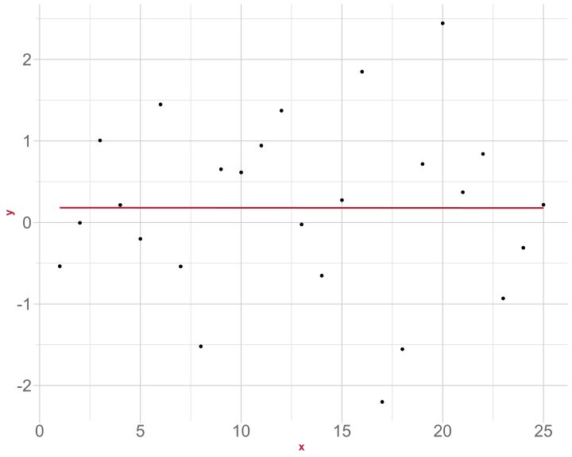
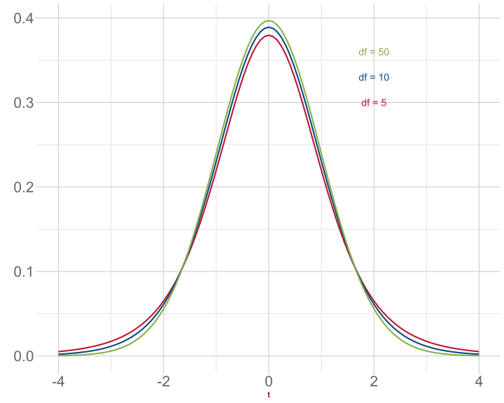
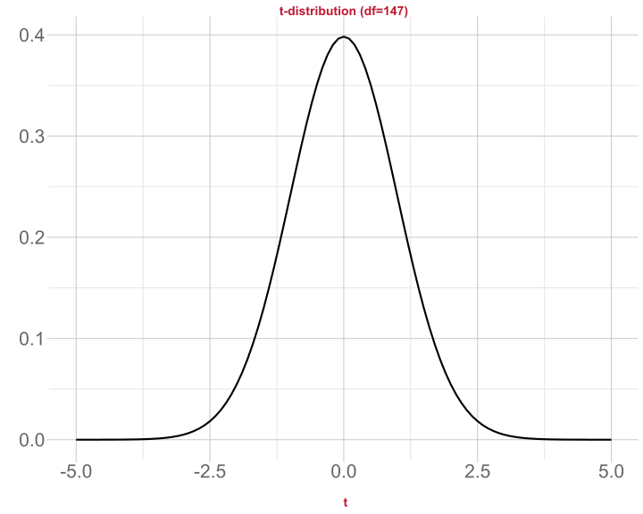
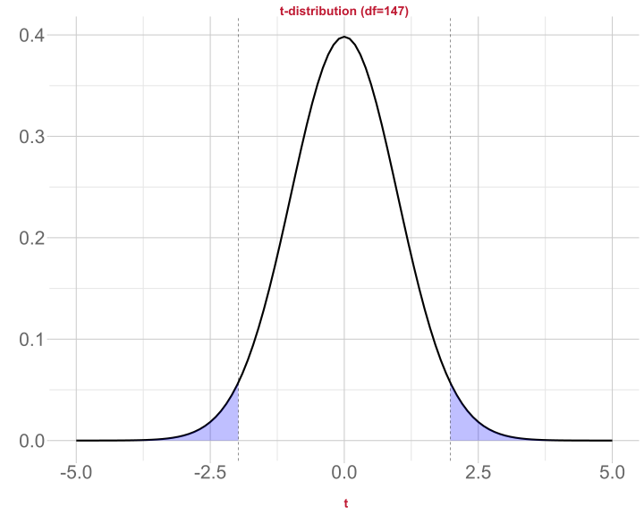
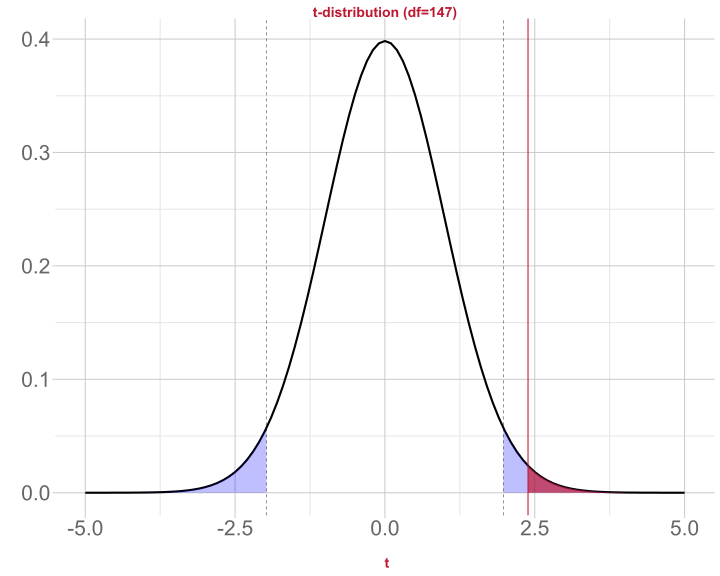
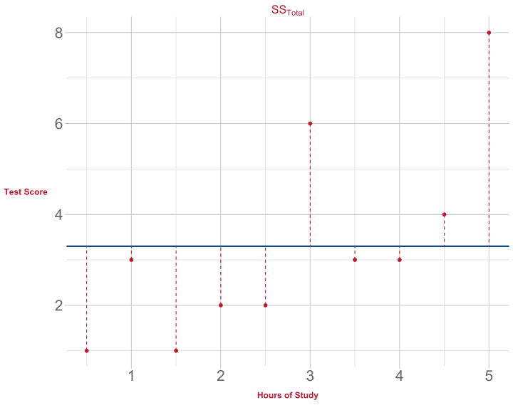
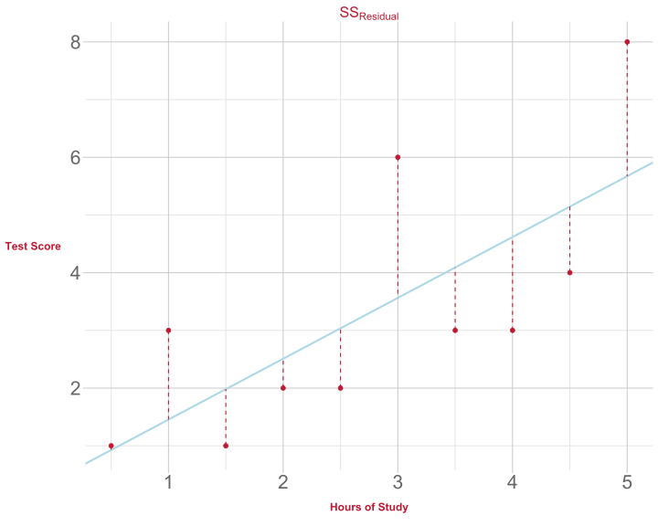
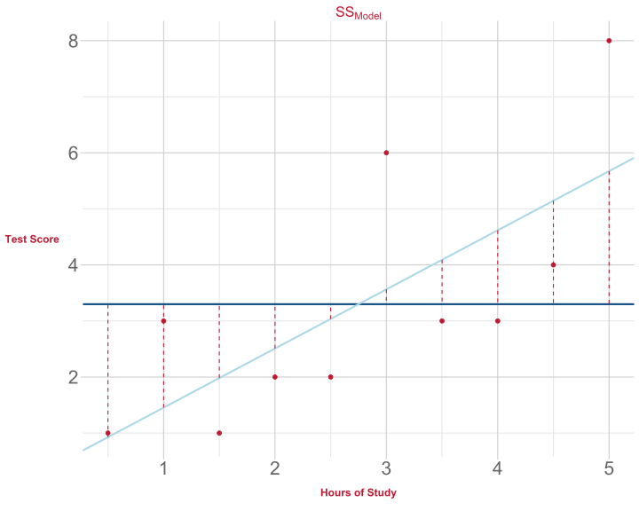

lm(score ~ hours + motivation, data = test_study2)Testing and Evaluating LM
Data Analysis for Psychology in R 2
Emma Waterston
Department of Psychology
University of Edinburgh
2025–2026
Course Overview
| Introduction to Linear Models | Intro to Linear Regression |
| Interpreting Linear Models | |
| Testing Individual Predictors | |
| Model Testing & Comparison | |
| Linear Model Analysis | |
| Analysing Experimental Studies | Categorical Predictors & Dummy Coding |
| Effects Coding & Coding Specific Contrasts | |
| Assumptions & Diagnostics | |
| Bootstrapping | |
| Categorical Predictor Analysis |
| Interactions | Interactions I |
| Interactions II | |
| Interactions III | |
| Analysing Experiments | |
| Interaction Analysis | |
| Advanced Topics | Power Analysis |
| Binary Logistic Regression I | |
| Binary Logistic Regression II | |
| Logistic Regression Analysis | |
| Exam Prep and Course Q&A |
This Week’s Learning Objectives
Understand how to interpret significance tests for \(\beta\) coefficients
Understand how to calculate and interpret \(R^2\) and adjusted- \(R^2\) as a measure of model quality
Be able to locate information on the significance of individual predictors and overall model fit in R
lmmodel output
Part 1: Recap & Overview
Recap
- Last week we expanded the general linear model equation to include multiple predictors:
\[ y_i = \beta_0 + \beta_1 \cdot x_{1i} + \beta_2 \cdot x_{2i} + \beta_j \cdot x_{ji} + \epsilon_i \]
- And we ran an example concerning test scores:
\[ \text{Score}_i = \beta_0 + \beta_1 \cdot \text{Hours}_{i} + \beta_2 \cdot \text{Motivation}_{i} + \epsilon_i \]
- And we looked at how to run this model in
R:
Evaluating our Model
So far we have estimated values for the key parameters of our model ( \(\beta\)s )
- Now we have to think about how we evaluate the model
Evaluating a model will consist of:
Evaluating the individual coefficients
Evaluating the overall model quality
Evaluating the model assumptions
Important: Before accepting a set of results, all three of these aspects of evaluation must be considered
- We will talk about evaluating individual coefficients and model quality today
- Model assumptions covered later in the course (Semester 1, Week 8)
Significance of Individual Effects
- A general way to ask this question would be to state:
Is our model informative about the association between X and Y?
- In the context of our example from last lecture, we could ask,
Is study time a useful predictor of test score?
The above is a research question
We need to turn this into a testable statistical hypothesis
Evaluating Individual Predictors
Steps in hypothesis testing:
- Research question
- Statistical hypothesis
- Define the null hypothesis
- Calculate an estimate of effect of interest
- Calculate an appropriate test statistic
- Evaluate the test statistic against the null
Research Questions and Hypotheses
Research questions are statements of what we intend to study
- A good question defines:
- constructs under study
- the association being tested
- a direction of association
- target populations etc.
Does increased study time improve test scores in school-age children?
Research Questions and Hypotheses
Statistical hypotheses are testable mathematical statements
In typical testing in Psychology, we define a null ( \(H_0\) ) and an alternative ( \(H_1\) ) hypothesis
- \(H_0\) is precise, and states a specific value for the effect of interest
- \(H_1\) is not specific, and simply says “something else other than the null is more likely”
Statistical Significance: Overview
Remember, we can only ever test the null hypothesis
We select a significance level, \(\alpha\) (typically .05)
Then we calculate the \(p\)-value associated with our test statistic
If the associated \(p\) is smaller than \(\alpha\), then we reject the null
If it is larger, then we fail to reject the null
Part 2: Steps in Significance Testing
Defining the Null
Conceptually:
- If \(x\) yields no information on \(y\), then \(\beta_1 = 0\)
Why would this be the case?
\(\beta\) gives the predicted change in \(y\) for a unit change in \(x\)
- If \(x\) and \(y\) are unrelated, then a change in \(x\) will not result in any change to the predicted value of \(y\)
- So for a unit change in \(x\), there is no (=0) change in \(y\)
We can state this formally as a null and alternative:
\[H_0: \beta_1 = 0\] \[H_1: \beta_1 \neq 0\]

Point Estimate and Test Statistic
We have already seen how we calculate \(\hat \beta_1\)
The associated test statistic for \(\beta\) coefficients is a \(t\)-statistic
\[t = \frac{\hat \beta}{SE(\hat \beta)}\]
where
- \(\hat \beta\) = any \(\beta\) coefficient we have calculated
- \(SE(\hat \beta)\) = standard error of \(\beta\)
- Recall that the standard error describes the spread of the sampling distribution
- The standard error \((SE)\) provides a measure of sampling variability
- A smaller SE suggests a more precise estimate (=good)
Lets look at the output from lm() again
Call:
lm(formula = score ~ hours + motivation, data = test_study2)
Residuals:
Min 1Q Median 3Q Max
-12.955 -2.804 -0.285 2.934 13.824
Coefficients:
Estimate Std. Error t value Pr(>|t|)
(Intercept) 6.8668 0.6547 10.49 <2e-16 ***
hours 1.3757 0.0799 17.22 <2e-16 ***
motivation 0.9163 0.3838 2.39 0.018 *
---
Signif. codes: 0 '***' 0.001 '**' 0.01 '*' 0.05 '.' 0.1 ' ' 1
Residual standard error: 4.39 on 147 degrees of freedom
Multiple R-squared: 0.67, Adjusted R-squared: 0.665
F-statistic: 149 on 2 and 147 DF, p-value: <2e-16And work out the \(t\)-values
- Let’s check the value for
motivationtogether:
\[ t = \frac{\hat \beta_2}{SE(\hat \beta_2)} = \frac{0.9163}{0.3838} = 2.388~(3dp) \]
SE( \(\hat \beta_j\) )
- The formula for the standard error of the slope is:
\[ SE(\hat \beta_j) = \sqrt{\frac{ SS_{Residual}/(n-k-1)}{\sum(x_{ij} - \bar{x_{j}})^2(1-R_{xj}^2)}} \]
- Where:
- \(SS_{Residual}\) is the residual sum of squares
- \(n\) is the sample size
- \(k\) is the number of predictors
- \(x_{ij}\) is the observed value of a predictor ( \(j\) ) for an individual ( \(i\) )
- \(\bar{x_{j}}\) is the mean of a predictor
- \(R_{xj}^2\) derives from the multiple correlation coefficient of the predictors
- \(R_{xj}^2\) captures to degree to which all of our predictors are related to each other
- For simple linear models, \(R_{xj}^2\) = 0 as there is only 1 predictor
SE( \(\hat \beta_j\) )
\[ SE(\hat \beta_j) = \sqrt{\frac{ SS_{Residual}/(n-k-1)}{\sum(x_{ij} - \bar{x_{j}})^2(1-R_{xj}^2)}} \]
- We want our \(SE\) to be smaller - this means our estimate is precise
- Examining the above formula we can see that:
- \(SE\) is smaller when residual variance ( \(SS_{residual}\) ) is smaller
- \(SE\) is smaller when sample size ( \(n\) ) is larger
- \(SE\) is larger when the number of predictors ( \(k\) ) is larger
- \(SE\) is larger when a predictor is strongly correlated with other predictors ( \(R_{xj}^2\) )
Sampling Distribution for the Null
So what about \(p\)?
\(p\) refers to the likelihood of having results as extreme as ours, given \(H_0\) is true
To compute that likelihood, we need a sampling distribution for the null
For \(\beta\), this is a \(t\)-distribution
Remember, the shape of the \(t\)-distribution changes depending on the degrees of freedom

- For \(\beta\), we use a \(t\)-distribution with \(n-k-1\) degrees of freedom
- \(n\) = sample size
- \(k\) = number of predictors
- The additional - 1 represents the intercept
A decision about the Null
We have a \(t\)-value associated with our \(\beta\) coefficient in the R model summary
- \(t\) = 2.388
We evaluate it against a \(t\)-distribution with \(n-k-1\) degrees of freedom
\(df\) = 150-2-1 = 147
As with all tests we need to set our \(\alpha\)
- Let’s set \(\alpha\) = 0.05 (two tailed)
- Now we need a critical value to compare our observed \(t\)-value to
Visualise the Null

- \(t\)-distribution with 147 df (our null distribution)
Visualise the Null
\(t\)-distribution with 147 df (our null distribution)
Critical values \((t^*)\) establish a boundary for significance
- The probability that a \(t\)-value will fall within these extreme regions of the distribution given \(H_0\) is true is equal to \(\alpha\)
- Because we are performing a two-tailed test, \(\alpha\) is split between each tail:
- The probability that a \(t\)-value will fall within these extreme regions of the distribution given \(H_0\) is true is equal to \(\alpha\)
Visualise the Null

\(t\)-distribution with 147 df (our null distribution)
Critical values \((t^*)\) establish a boundary for significance
- The probability that a \(t\)-value will fall within these extreme regions of the distribution given \(H_0\) is true is equal to \(\alpha\)
- Because we are performing a two-tailed test, \(\alpha\) is split between each tail:
- The probability that a \(t\)-value will fall within these extreme regions of the distribution given \(H_0\) is true is equal to \(\alpha\)
Visualise the Null

\(t\)-distribution with 147 df (our null distribution)
Critical values \((t^*)\) establish a boundary for significance
- The probability that a \(t\)-value will fall within these extreme regions of the distribution given \(H_0\) is true is equal to \(\alpha\)
- Because we are performing a two-tailed test, \(\alpha\) is split between each tail:
- The probability that a \(t\)-value will fall within these extreme regions of the distribution given \(H_0\) is true is equal to \(\alpha\)
- \(t\) = 2.388, \(p\) = .018
Part 3: Alternative Approach: Using Confidence Intervals
Refresher: What is a Confidence Interval?
When we perform these analyses, we obtain a parameter estimate from our sample (e.g. \(\beta_2 = 0.92\))
It’s unlikely that the true value is exactly equal to our parameter estimate
We can be much more certain we’ve captured the true value if we report confidence intervals
Range of plausible values for the parameter
The wider the range, the more confident we can be that our interval captures the true value
Refresher: What is a Confidence Level?
To create a confidence interval we must decide on a confidence level
A number between 0 and 1 specified by us
How confident do you want to be that the confidence interval will contain the true parameter value?
Typical confidence levels are 90%, 95%, or 99%
Test your understanding: If we select a 90% confidence level, will the range of values included in our CI be smaller or larger than if we selected a 99% confidence level?
Confidence Intervals for \(\beta\)
We can also compute confidence intervals for \(\hat \beta\)
The \(100 (1 - \alpha)\), e.g., 95%, confidence interval for the slope is:
\[ \hat \beta_1 \pm t^* \times SE(\hat \beta_1) \]
- So, the 95% confidence interval for the effect of
motivationwould be:
- We can be 95% confident that the range 0.158 and 1.675 contains the true value of our \(\beta_2\)
confint Function
- We can get confidence intervals using the
confint()function:
The confidence intervals for both
motivationandhoursdo not include the null value (in this case, 0)This provides support (beyond \(p<.05\)) that motivation and hours are statistically significant predictors of test scores
Part 4: Cofficient of Determination ( \(R^2\) )
Revisit Model Output
Call:
lm(formula = score ~ hours + motivation, data = test_study2)
Residuals:
Min 1Q Median 3Q Max
-12.955 -2.804 -0.285 2.934 13.824
Coefficients:
Estimate Std. Error t value Pr(>|t|)
(Intercept) 6.8668 0.6547 10.49 <2e-16 ***
hours 1.3757 0.0799 17.22 <2e-16 ***
motivation 0.9163 0.3838 2.39 0.018 *
---
Signif. codes: 0 '***' 0.001 '**' 0.01 '*' 0.05 '.' 0.1 ' ' 1
Residual standard error: 4.39 on 147 degrees of freedom
Multiple R-squared: 0.67, Adjusted R-squared: 0.665
F-statistic: 149 on 2 and 147 DF, p-value: <2e-16Quality of the Overall Model
When we measure an outcome ( \(y\) ) in some data, the scores will vary (we hope).
- Variation in \(y\) = total variation of interest
The aim of our linear model is to build a model which describes our outcome variable as a function of our predictor variable(s)
- We are trying to explain variation in \(y\) using variation in \(x\)
- When \(y\) co-varies with \(x\)…
- we can predict changes in \(y\) based on changes in \(x\)…
- so we say the variance in \(y\) is explained or accounted for
But the model will not explain all the variance in \(y\)
- What is left unexplained is called the residual variance
- We can break down variation in our data (i.e. variation in \(y\)) based on sums of squares as:
\[SS_{Total} = SS_{Model} + SS_{Residual}\]
Coefficient of Determination
- One way to consider how good our model is, would be to consider the proportion of total variance our model accounts for
\[R^2 = \frac{SS_{Model}}{SS_{Total}} = 1 - \frac{SS_{Residual}}{SS_{Total}}\]
\(R^2\) = coefficient of determination
- Quantifies the amount of variability in the outcome accounted for by the predictors
- The more variance accounted for, the better the model fit
- Represents the extent to which the prediction of \(y\) is improved when predictions are based on the linear relation between \(x\) and \(y\), compared to not considering \(x\)
- To illustrate, we can calculate the different sums of squares
Total Sum of Squares
- Each Sums of Squares measure quantifies different sources of variation
\[SS_{Total} = \sum_{i=1}^{n}(y_i - \bar{y})^2\]
Squared distance of each data point from the mean of \(y\)
Mean is our baseline

Residual Sum of Squares
- Each Sums of Squares measure quantifies different sources of variation
\[SS_{Residual} = \sum_{i=1}^{n}(y_i - \hat{y}_i)^2\]
This may look familiar
Squared distance of each point from the predicted value

Model Sums of Squares
- Each Sums of Squares measure quantifies different sources of variation
\[SS_{Model} = \sum_{i=1}^{n}(\hat{y}_i - \bar{y})^2\]
The deviance of the predicted scores from the mean of \(y\)
Easy to calculate if we know total sum of squares and residual sum of squares
\[SS_{Model} = SS_{Total} - SS_{Residual}\]

Values in our Sample
In the current example, these values are:
- \(SS_\text{total}\) = 8556.06
- \(SS_\text{residual}\) = 2826.83
- \(SS_\text{model}\) = 5729.23
Coefficient of Determination
- Let’s come back to \(R^2\)
\[ R^2 = 1 - \frac{SS_{Residual}}{SS_{Total}} \]
- Or, alternatively
\[ R^2 = \frac{SS_{Model}}{SS_{Total}} \]
Coefficient of Determination: In our Example
\[ R^2 = \frac{SS_{Model}}{SS_{Total}} = \frac{5729.23}{8556.06} = 0.6695 \]
\(R^2\) = 0.6695 means that 66.95% of the variation in test scores is accounted for by hours of revision and student motivation
Compare to Model Output
Call:
lm(formula = score ~ hours + motivation, data = test_study2)
Residuals:
Min 1Q Median 3Q Max
-12.955 -2.804 -0.285 2.934 13.824
Coefficients:
Estimate Std. Error t value Pr(>|t|)
(Intercept) 6.8668 0.6547 10.49 <2e-16 ***
hours 1.3757 0.0799 17.22 <2e-16 ***
motivation 0.9163 0.3838 2.39 0.018 *
---
Signif. codes: 0 '***' 0.001 '**' 0.01 '*' 0.05 '.' 0.1 ' ' 1
Residual standard error: 4.39 on 147 degrees of freedom
Multiple R-squared: 0.67, Adjusted R-squared: 0.665
F-statistic: 149 on 2 and 147 DF, p-value: <2e-16Adjusted \(R^2\)
When there are two or more predictors, \(R^2\) tends to be an inflated estimate of the corresponding population value
Due to random sampling fluctuation, even when \(R^2 = 0\) in the population, it’s value in the sample may \(\neq 0\)
In smaller samples , the fluctuations from zero will be larger on average
With more predictors , there are more opportunities to add to the positive fluctuation
We therefore compute an adjusted \(R^2\)
\[ \hat R^2 = 1 - (1 - R^2)\frac{n-1}{n-k-1} \]
- Adjusted \(R^2\) adjusts for both sample size ( \(n\) ) and number of predictors ( \(k\) )
In our Example
Summary
We have an inferential test, based on a \(t\)-distribution, for the significance of \(\beta\)
We can compute confidence intervals that give us more certainty that we have captured the true value of \(\beta\)
We are more likely to find a statistically significant effect when residuals are small and we have a large sample
We can assess the degree to which our model explains variance in the outcome based on \(R^2\)
When we have multiple predictors, we should use the adjusted \(R^2\) to get a more conservative estimate
This Week
Tasks

Attend your lab and work together on the exercises

Complete the weekly quiz
Support

Help each other on the Piazza forum

Attend office hours (see Learn page for details)